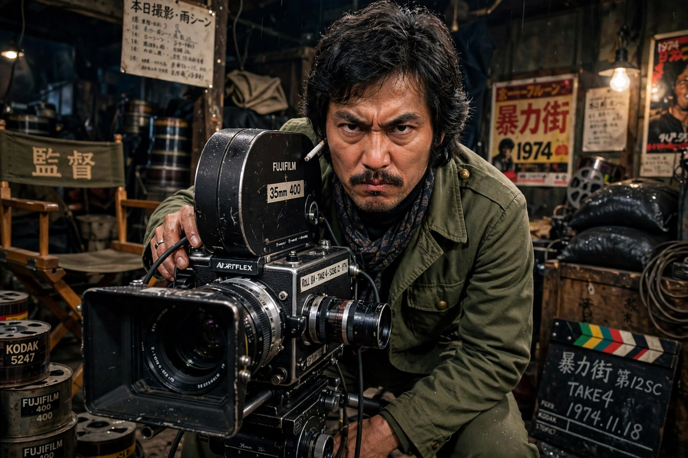

| Nagisa Ōshima | |
| Born | March 31, 1932, Tamano, Okayama, Japan |
|---|---|
| Died | January 15, 2013 (aged 80), Fujisawa, Kanagawa, Japan |
| Occupation | Film director, screenwriter |
| Years active | 1953–1999 |
| Notable work | In the Realm of the Senses, Merry Christmas, Mr. Lawrence |

Nagisa Ōshima (大島 渚, Ōshima Nagisa; March 31, 1932 – January 15, 2013) was a Japanese film director and screenwriter, the leading figure of the Japanese New Wave. His confrontational films — on youth delinquency, political radicalism, sexuality, and Japan's treatment of its Korean minority — repeatedly scandalized and reshaped Japanese cinema.
A Kyoto University law graduate and former student activist, Ōshima joined Shochiku in 1954 and directed his first feature in 1959. Cruel Story of Youth (1960) made him the spearhead of the studio's "New Wave", but after the studio withdrew Night and Fog in Japan (1960) following a political assassination, he left to found his own company, Sōzōsha. His independent films of the 1960s — Death by Hanging (1968), Diary of a Shinjuku Thief (1969), and The Ceremony (1971) — fused Brechtian experiment with fierce social critique.
In the Realm of the Senses (1976), a French co-production containing unsimulated sexual content, became an international cause célèbre; Ōshima was tried for obscenity in Japan over its published screenplay and acquitted. He won Best Director at Cannes for Empire of Passion (1978). Merry Christmas, Mr. Lawrence (1983), starring David Bowie and Ryuichi Sakamoto, reached a wide Anglophone audience. His final film was the samurai drama Gohatto (Taboo, 1999).
Ōshima remained a combative public intellectual on Japanese television until a stroke in 1996 curtailed his work. He died of pneumonia in 2013.